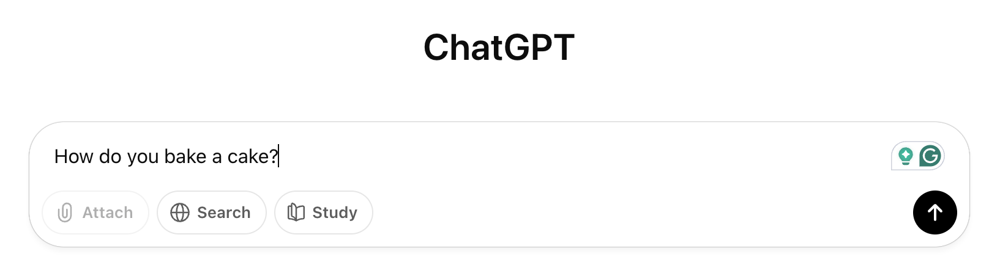
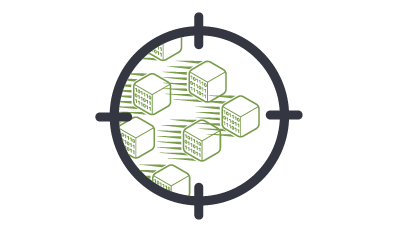
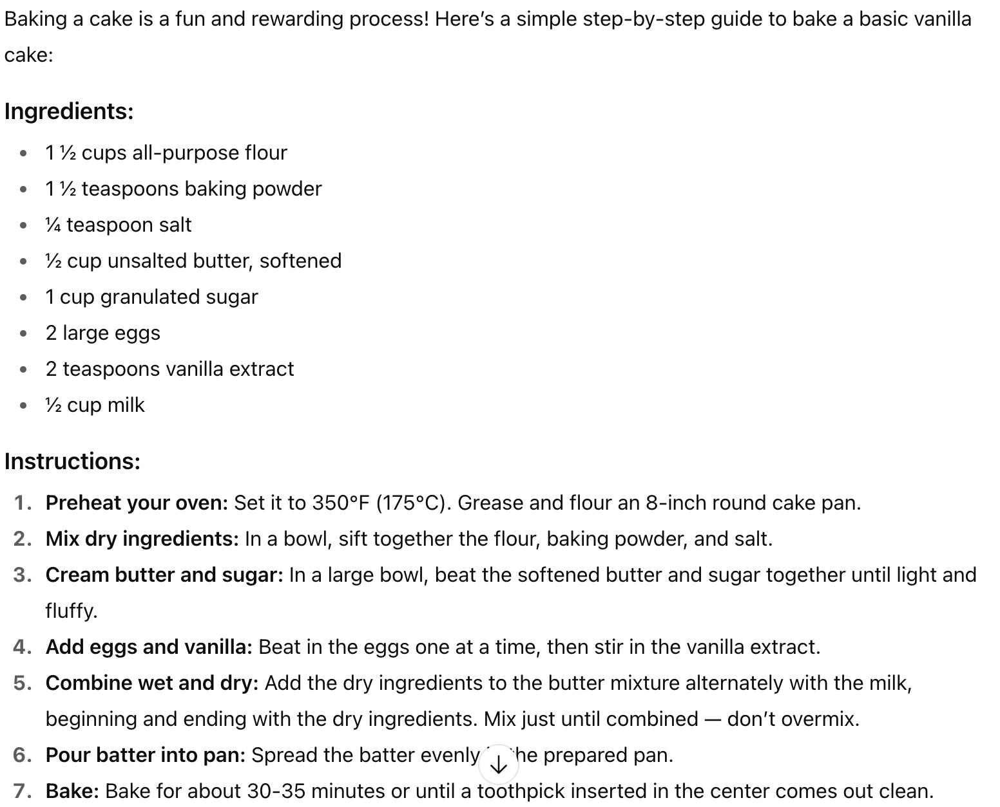

In this day and age, many people use AI for school, work, creative endeavors, and research.
Despite its widespread use,
many people don't know how they actually talk to the AI.
In this article, we explore how your prompt is seen by the AI for
it to respond to you.

This process starts and ends with the user's input. First, you type your prompt for the AI and hit send.
When you send your prompt for the AI, the text data is converted into binary code, bits and bytes.
If the binary is too
much to send in one piece, then the data is separated into packets, which are groups of data,
by the TCP or Transmission
Control Protocol.

After your request is broken down by the TCP, two IP addresses are added to it. First, your IP address, so it knows
where
to go back to. Secondly, the destintion IP address, which is the AI's servers.
Now that your packets have been properly labeled, the Router finds the most heuristic,
or efficient, path to
get to the destination. Once that has been determined, it sends the packets on their way.
The packets arrive at the AI's data center and are reassembled, forming your prompt. The AI processes it and makes a response.
The AI's response is broken down to packets and sent back to you.
The TCP reassembles the broken down packets and checks for errors that may have happened between the transfer.

After all the steps are followed, the user is greeted with the response from the AI.
) Click here for another article.